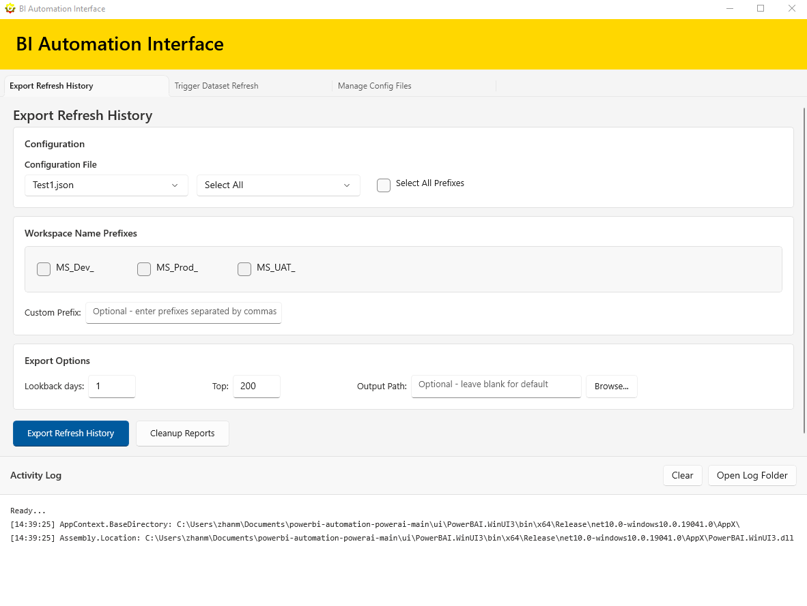
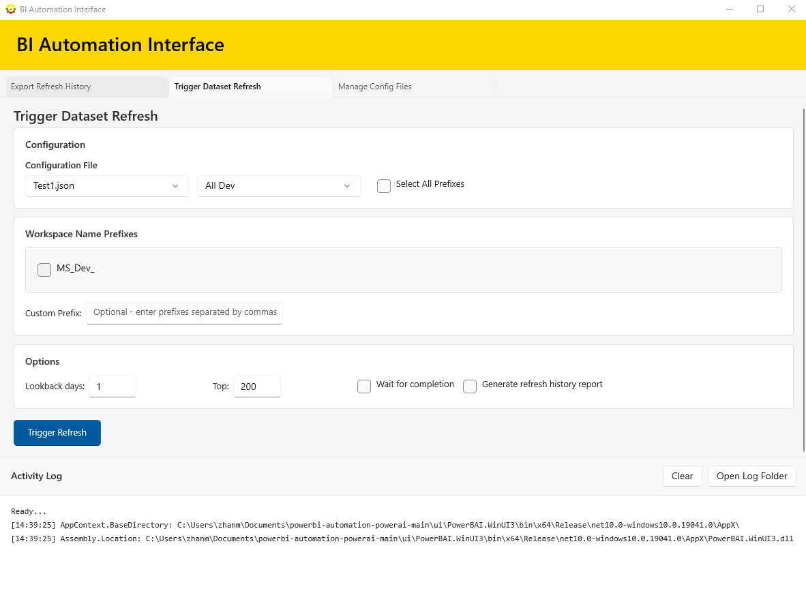
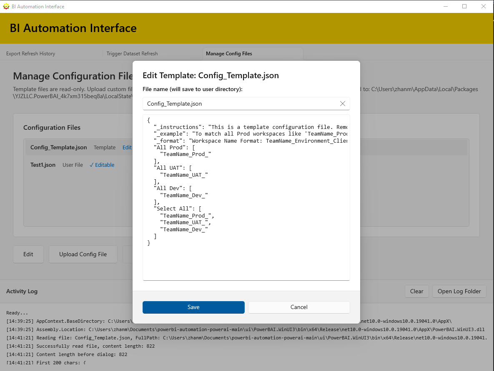

Configuration-driven automation to refresh datasets, export history, and keep your reporting clean.
Select presets, prefixes, or custom filters to refresh multiple workspaces quickly.
Export refresh history with lookback days, top results, and custom output paths.
Upload, edit, and organize JSON config files with workspace prefix presets.
Clean up user-created refresh reports only. It does not delete anything from your workspaces or datasets.
Combine preset selections with custom prefixes for flexible targeting.
Track actions and troubleshooting details in the built-in activity log.

Trigger Refresh

Export Refresh History

Manage Config Files
Follow the getting started guide to install prerequisites and configure your first preset.
Get Started